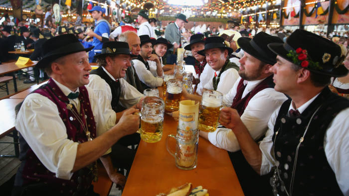

Traditions
Wiesn
The Oktoberfest is the world's largest Volksfest. It is held annually in Munich, Bavaria, Germany. It is a 16-
to 18-day folk festival running from mid- or late September to the first Sunday in October, with more than six
million people from around the world attending the event every year
